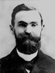

FORMER JUDGES
Judge George E. Ross
George E, Ross was born January 15, 1858. He attended public schools in Peru, Indiana
before Wabash College in Crawfordsville. In 1878 he gained admission to the Bar from Cass
County and practiced with his father, Nathan O. Ross.
Judge Ross won a seat on the Indiana Appellate Court as a Democrat, and served one term
from January 1, 1893 to January 1, 1897. He returned to Cass County to practice law with his
father, until Nathan Ross passed away in July 1901.
In 1901, Judge Ross became counsel to the Pittsburgh, Cincinnati, Chicago, and St. Louis
Railway Company, which later became the Pennsylvania Railroad Company. In this position,
which he held until his death, he regularly argued cases before the Indiana Appellate Court
and Indiana Supreme Court.
He died on June 27, 1928 while on vacation in La Jolla California.
before Wabash College in Crawfordsville. In 1878 he gained admission to the Bar from Cass
County and practiced with his father, Nathan O. Ross.
Judge Ross won a seat on the Indiana Appellate Court as a Democrat, and served one term
from January 1, 1893 to January 1, 1897. He returned to Cass County to practice law with his
father, until Nathan Ross passed away in July 1901.
In 1901, Judge Ross became counsel to the Pittsburgh, Cincinnati, Chicago, and St. Louis
Railway Company, which later became the Pennsylvania Railroad Company. In this position,
which he held until his death, he regularly argued cases before the Indiana Appellate Court
and Indiana Supreme Court.
He died on June 27, 1928 while on vacation in La Jolla California.
